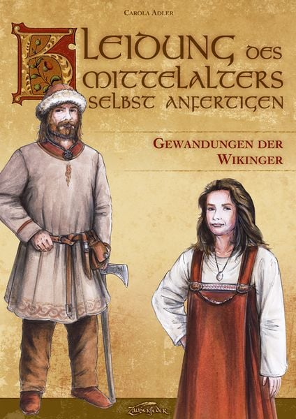
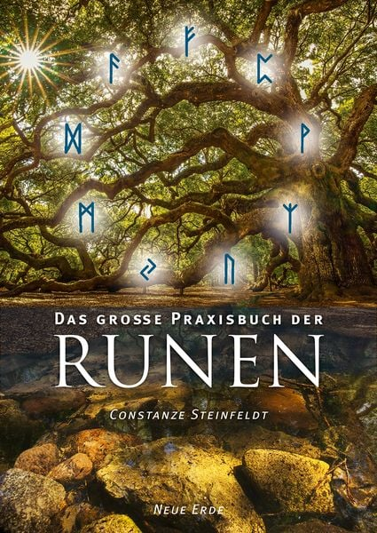

Wissen. Geschichte. Inspiration.

Kleidung des Mittelalters selbst anfertigen – Gewandungen der Wikinger
Carola Adler
Ein Titel aus dem vorhandenen Bücherbestand der Website.

Das große Praxisbuch der Runen
Constanze Steinfeldt
Ein Titel aus dem vorhandenen Bücherbestand der Website.